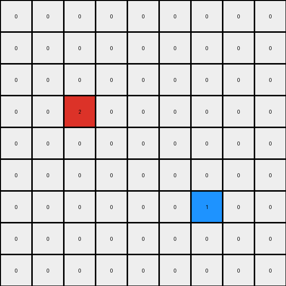
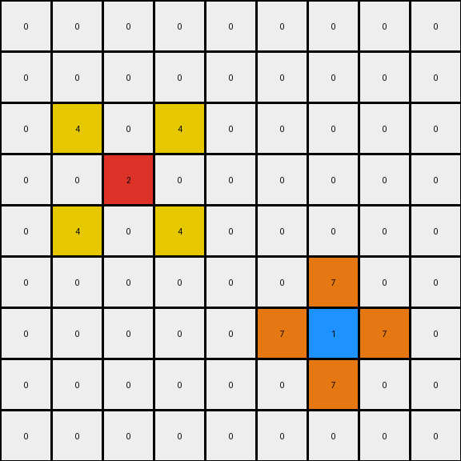

001 • History
- puzzle_id:
2-0ca9ddb6
- description:
example_1
- timestamp:
24.357.081407
- call_count:
1
Begin puzzle: 2-0ca9ddb6
example_1
input
[[0 0 0 0 0 0 0 0 0]
[0 0 0 0 0 0 0 0 0]
[0 0 0 0 0 0 0 0 0]
[0 0 2 0 0 0 0 0 0]
[0 0 0 0 0 0 0 0 0]
[0 0 0 0 0 0 0 0 0]
[0 0 0 0 0 0 1 0 0]
[0 0 0 0 0 0 0 0 0]
[0 0 0 0 0 0 0 0 0]]
output
[[0 0 0 0 0 0 0 0 0]
[0 0 0 0 0 0 0 0 0]
[0 4 0 4 0 0 0 0 0]
[0 0 2 0 0 0 0 0 0]
[0 4 0 4 0 0 0 0 0]
[0 0 0 0 0 0 7 0 0]
[0 0 0 0 0 7 1 7 0]
[0 0 0 0 0 0 7 0 0]
[0 0 0 0 0 0 0 0 0]]
images
{kind=link}

{kind=link}

observations
INSTRUCTIONS:
above is a pair of example input and output grids
document your initial observations and impressions
begin with a verbal description of your perception of the input and output grid
use
code_executionto examine the grid information and verify the assumptions about size, colors, objects, and transformations. Focus your analysis on aspects like:Counting the occurrences of each color.
How to identify the coordinates of pixels that have changed color or position.
Determining if the dimensions of the grid have changed.
Analyzing the count, size, shape, and relative positions of objects (contiguous blocks of the same color).
since the code you use may not be carried forward on following prompts, be sure to have the code print your findings in the output
use what you learn to develop a natural language program of the transformation rule.
review your findings and try to determine the natural language description of the transformation rule. How does the information captured in the YAML block inform your understanding of the transformation?
use a yaml block to capture details (examples):
input:
width: X
height: Y
colors:
- N: (count)
objects:
- size, position and color - desc
differences:
cells_changed: N
colors_changed: desc
transformation:
- speculate on transformation rules
final step - provide a thorough natural language program to tell another intelligent entity how to transform the input grid into the output grid
You will examine and analyze the example grids
For each example pair, your goal is to derive a natural language description of the transformation rule that explains how the input is changed to produce the output. This “natural language program” should describe the steps or logic involved in the transformation.
the natural language program should be sufficient for an intelligent agent to perform the operation of generating an output grid from the input, without the benefit of seeing the examples. So be sure that the provide
context for understanding the input grid (objects, organization and important colors) particularly context for how to identify the ‘objects’
process for initializing the output grid (copy from input or set size and fill)
describe the color palette to be used in the output
describe how to determine which pixels should change in the output
For example, it might state:
copy input to working output
identify sets of pixels in blue (1) rectangles in working grid
identify to largest rectangle
set the largest rectangle’s pixels to red (2)
But remember - any information that describe the story of the transformations is desired. Be flexible and creative.
See also